Cloud Foundry Eclipse Plugin
- Install Cloud Foundry Eclipse Plugin
- About the Plugin User Interface
- Create a Cloud Foundry Server
- Deploy an Application
- Create a Service
- Bind and Unbind Services
- View an Application File
- Undeploy an Application
- Scale an Application
- Push Application Changes
- Manage Application URLs
- Information in the Console View
- Clone a Cloud Foundry Server Instance
- Add a Cloud Foundry Instance URL
The Cloud Foundry Eclipse Plugin is an extension that enables Cloud Foundry users to deploy and manage Java and Spring applications on a Cloud Foundry instance from Eclipse or Spring Tool Suite (STS).
The plugin supports Eclipse v3.8 and v4.3 (a Java EE version is recommended), and STS 3.0.0 and later.
This page has instructions for installing and using v1.7.2 of the plugin.
You can use the plugin to perform the following actions:
- Deploy applications from an Eclipse or STS workspace to a running Cloud Foundry instance. The Cloud Foundry Eclipse plugin supports the following application types:
- Spring Boot
- Spring
- Java Web
- Java standalone
- Grails
- Create, bind, and unbind services.
- View and manage deployed applications and services.
- Start and stop applications.
v1.7.2 of this plugin provides the following updates and changes:
- Cloud Foundry Eclipse is now enabled for NLS and Internationalization.
- A “New Service Binding” wizard that allows service instances to be bound to applications. This wizard serves as an alternative to binding through the existing drag-and-drop feature.
- Improvements in Loggregator streaming to the console.
- Improvements in deploying Spring Boot and Getting Started projects with templates.
Install Cloud Foundry Eclipse Plugin
If you have a previous version of the Cloud Foundry Eclipse Plugin installed, uninstall it before installing the new version. To uninstall the plugin:
- Choose About Eclipse (or About Spring Tool Suite) from the Eclipse (or Spring Tool Suite) menu and click Installation Details.
- In Installation Details, select the previous version of the plugin and click Uninstall.
Follow the installation instructions appropriate for your environment:
- Install to Eclipse from Marketplace
- Install to STS from IDE Extensions Tab
- Install from a Local Repository
Install to Eclipse from Marketplace
Follow the instructions below to install the Cloud Foundry Eclipse Plugin to Eclipse from the Eclipse Marketplace.
- Start Eclipse.
- From the Eclipse Help menu, select Eclipse Marketplace.
- In the Eclipse Marketplace window, enter “Cloud Foundry” in the Find field. Click Go.
In the search results, next to the listing for Cloud Foundry Integration, click Install.
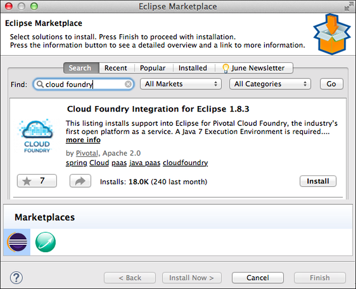
In the Confirm Selected Features window, click Confirm.
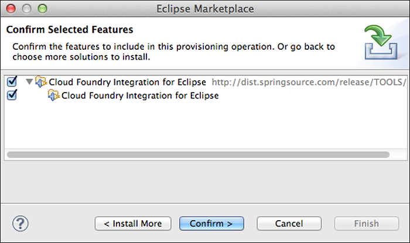
The Review Licenses window appears. Select “I accept the terms of the license agreement” and click Finish.
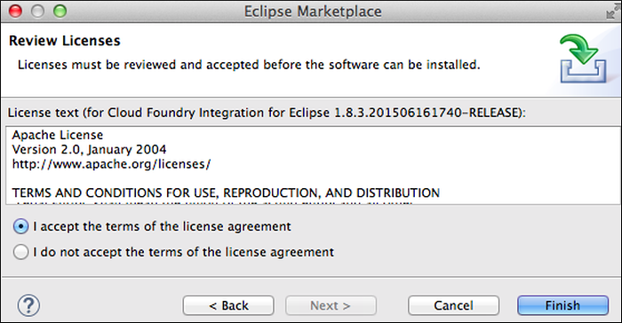
The Software Updates window appears. Click Yes to restart Eclipse.
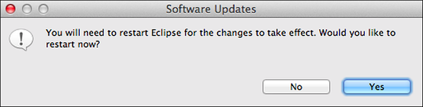
Install to STS from IDE Extensions Tab
Follow these instructions to install the Cloud Foundry Eclipse Plugin to Spring Tool Suite (STS) from the IDE Extensions tab.
- Start STS.
On the STS Dashboard, click IDE Extensions.
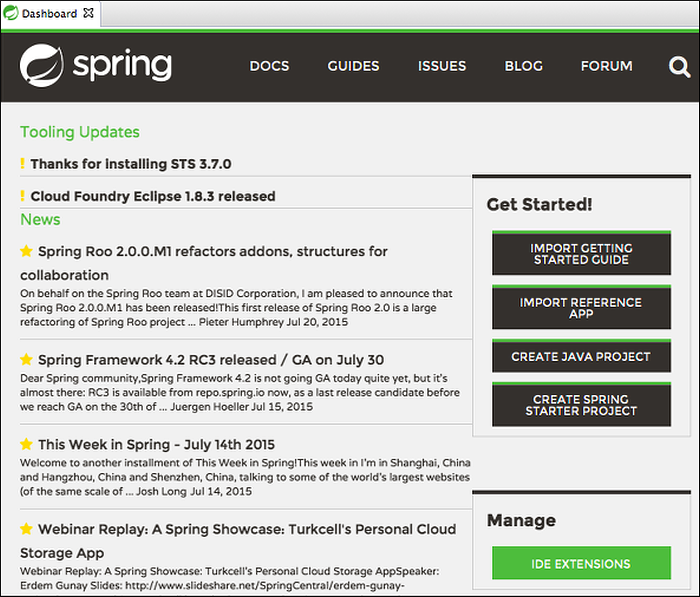
Enter “Cloud Foundry” in the Find field.
Select Cloud Foundry Integration for Eclipse and click Install.
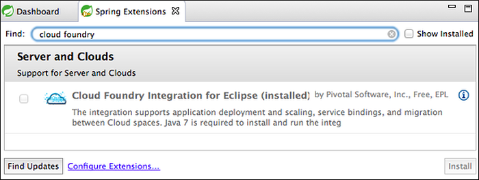
In the Install window, click Next.
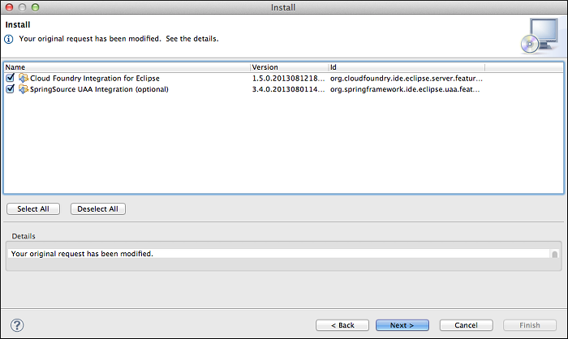
In the Install Details window, click Next.
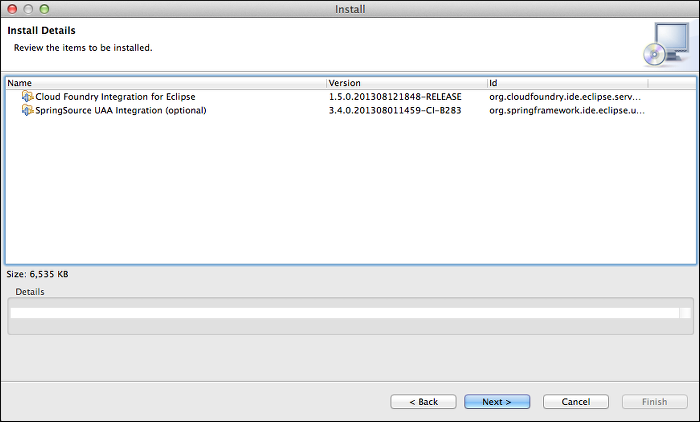
The Review Licenses window appears. Select “I accept the terms of the license agreement” and click Finish.
The Software Updates window appears. Click Yes to restart Spring Tool Suite.
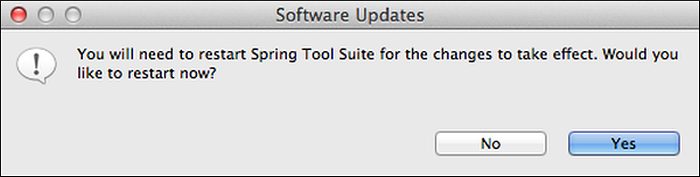
Install a Release Version Offline
If you need to install a release version of Cloud Foundry Eclipse Plugin in offline mode, you can download a release update site zip file and transfer it to the offline environment.
To install a Release Version offline, follow the steps below on a computer running Eclipse or Spring Tool Suite (STS).
Browse to https://github.com/cloudfoundry/eclipse-integration-cloudfoundry/blob/master/updatesites.md and download a release update site zip file.
In Eclipse or STS, select Install New Software from the Help menu.
In the Available Software window, to the right of the Work with field, click Add.
In the Add Repository window, enter
Cloud Foundry Integrationor a name of your choice for the repository. Click Archive.In the Open window, browse to the location of the update site zip file and click Open.
In the Add Repository window, click OK.
In the Available Software window, select Core/Cloud Foundry Integration and, optionally, Resources/Cloud Foundry Integration. Click Next.
In the Review Licenses window, select “I accept the terms of the license agreement” and click Finish.
Install from a Local Build
If you need to install the Cloud Foundry Eclipse Plugin from a local build, rather than from a release version, you can download and build the source, create a repository and copy it to the target machine, then install from the copied repository.
Obtain the plugin source from GitHub in one of the following ways:
- Download archived source code for released versions of the plugin from https://github.com/SpringSource/eclipse-integration-cloudfoundry/releases
- Clone the project repository:
$ git clone https://github.com/SpringSource/eclipse-integration-cloudfoundry
Unzip the downloaded archive. In a terminal, run the following command:
$ mvn -Pe37 package
Copy the
org.cloudfoundry.ide.eclipse.server.site/target/sitedirectory to the machine where you want to install the plugin.On the machine where you want to install the plugin, launch Eclipse or Spring Tool Suite (STS).
Select Install New Software from the Help menu.
In the Available Software window, to the right of the Work with field, click Add.
In the Add Repository window, enter
Cloud Foundry Integrationor a name of your choice for the repository. Click Local.In the Open window, browse to the
org.cloudfoundry.ide.eclipse.server.site/target/sitedirectory. Click Open.In the Add Repository window, click OK.
In the Available Software window, select Core/Cloud Foundry Integration and, optionally, Resources/Cloud Foundry Integration. Click Next.
In the Review Licenses window, select “I accept the terms of the license agreement” and click Finish.
About the Plugin User Interface
The sections below describe the Cloud Foundry Eclipse plugin user interface. If you do not see the tabs described below, select the Pivotal Cloud Foundry server in the Servers view. To expose the Servers view, ensure that you are using the Java perspective, then select Window > Show View > Other > Server > Servers.
The Cloud Foundry editor, outlined in red in the screenshot below, is the primary plugin user interface. Some workflows involve interacting with standard elements of the Eclipse user interface, such as the Project Explorer and the Console and Servers views.
Note that the Cloud Foundry editor allows you to work with a single Cloud Foundry space. Each space is represented by a distinct server instance in the Servers view (B). Multiple editors, each targeting a different space, can be open simultaneously. However, only one editor targeting a particular Cloud Foundry server instance can be open at a time.
Overview Tab
The follow panes and views are present when the Overview tab is selected:
- A — The Package Explorer view lists the projects in the current workspace.
- B – The Servers view lists server instances configured in the current workspace. A server of type Pivotal Cloud Foundry represents a targeted space in a Cloud Foundry instance.
- C – The General Information pane.
- D – The Account Information pane lists your Cloud Foundry credentials and the target organization and space. The pane includes these controls:
- Clone Server — Use to create additional Pivotal Cloud Foundry server instances. You must configure a server instance for each Cloud Foundry space that you wish to target. For more information, see Create Additional Server Instances.
- Change Password — Use to change your Cloud Foundry password.
- Validate Account — Use to verify your currently configured Cloud Foundry credentials.
- E – The Server Status pane shows whether or not you are connected to the target Cloud Foundry space, and the Disconnect and Connect controls.
- F – The Console view displays status messages when you perform an action such as deploying an application.
- G – The Remote Systems view allows you to view the contents of a file that is part of a deployed application. For more information, see View an Application File.
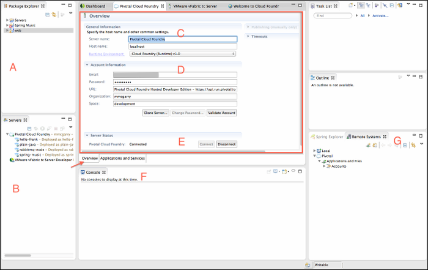
Applications and Services Tab
The follow panes are present when the Applications and Services tab is selected:
- H — The Applications pane lists the applications deployed to the target space.
- I — The Services pane lists the services provisioned in the targeted space.
J — The General pane displays the following information for the application currently selected in the Applications pane:
- Name
- Mapped URLs – Lists URLs mapped to the application. You can click a URL to open a browser to the application within Eclipse or STS, and click the pencil icon to add or remove mapped URLs. See Manage Application URLs.
- Memory Limit – The amount of memory allocated to the application. You can use the pull-down to change the memory limit.
- Instances – The number of instances of the application that are deployed. You can use the pull-down to change number of instances.
- Start, Stop, Restart, Update and Restart — The controls that appear depend on the current state of the application. The Update and Restart command will attempt an incremental push of only those application resources that have changed. It will not perform a full application push. See Push Application Changes below.
K — The Services pane lists services that are bound to the application currently selected in the Applications pane. The icon in the upper right corner of the pane allows you to create a service, as described in Create a Service.
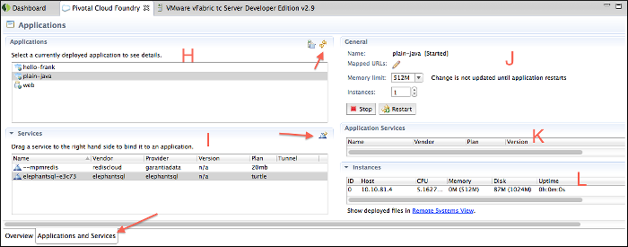
Create a Cloud Foundry Server
This section contains instructions for configuring a server resource that will represent a target Cloud Foundry space. You will create a server for each space in Cloud Foundry to which you will deploy applications. Once you create your first Cloud Foundry service instances using the instructions below, you can create additional instances using the Clone Server feature.
- Right-click the Servers view and select New > Server.
In the Define a New Server window, expand the Pivotal folder, select Cloud Foundry, and click Next.
Note: Do not modify default values for Server host name or Server Runtime Environment. These fields are not used
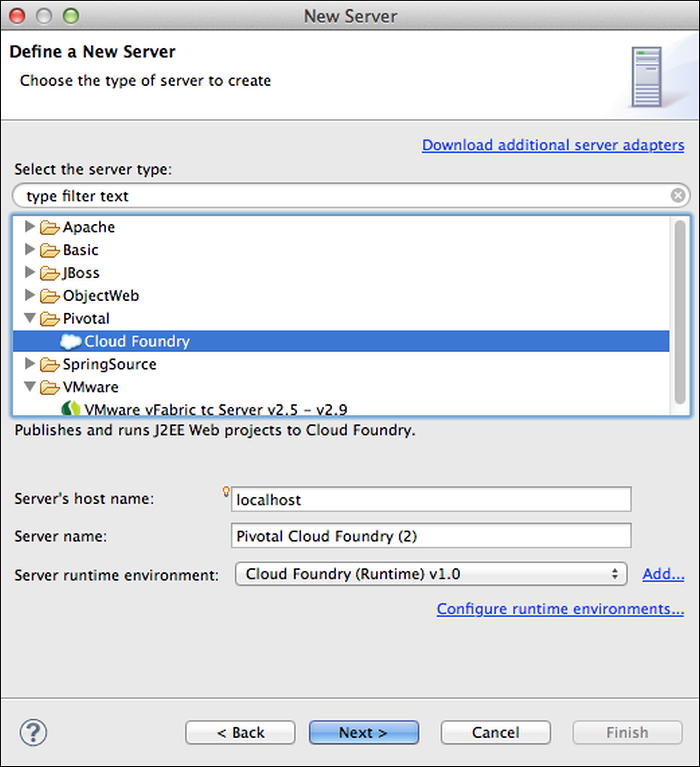
In the Cloud Foundry Account window, if you already have a Pivotal Cloud Foundry Hosted Developer Edition account, enter your email account and password credentials and click Validate Account.
Note: By default, the URL field points to the Pivotal Cloud Foundry Hosted Developer Edition URL of https://api.run.pivotal.io. If you have a Cloud Foundry account, refer to the Identifying your Cloud Foundry API Endpoint and Version topic to determine the URL of the Cloud Controller in your Cloud Foundry instance. Click Manage Cloud… to add this URL to your Cloud Foundry account. Validate the account and continue through the wizard.
If you do not have a Cloud Foundry account and want to register a new Pivotal Cloud Foundry Hosted Developer Edition account, click Sign Up. After you create the account, you can complete this procedure.
Note: The Register Account button is inactive.
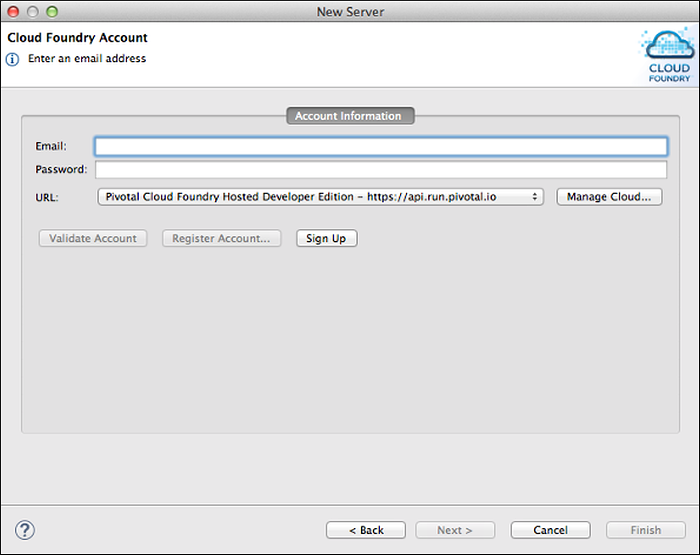
The Cloud Foundry Account window is refreshed and displays a message indicating whether or not your credentials were valid. Click Next.
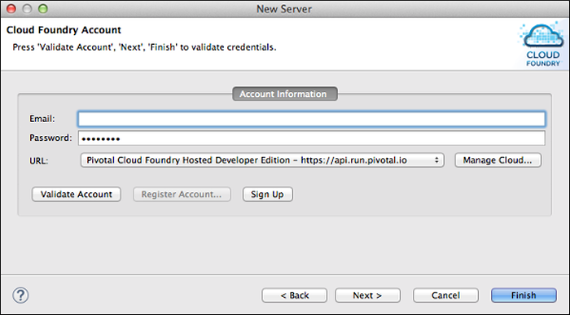
In the Organizations and Spaces window, select the space that you want to target, and click Finish.
Note: If you do not select a space, the server will be configured to connect to the default space, which is the first encountered in a list of your spaces.
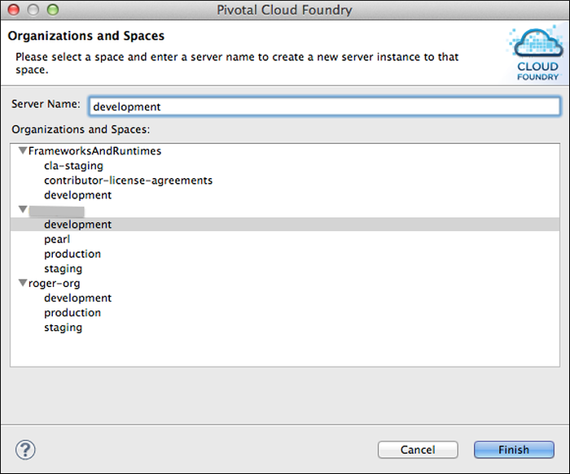
Once you have successfully configured the Pivotal Cloud Foundry server, it will appear in the Servers view of the Eclipse or STS user interface. To familiarize yourself with the plugin user interface, see About the Plugin User Interface. Following this step, proceed to Deploy an Application.
Deploy an Application
To deploy an application to Cloud Foundry using the plugin:
To initiate deployment either:
- Drag the application from the Package Explorer view onto the Pivotal Cloud Foundry server in the Servers view, or
- Right-click the Pivotal Cloud Foundry server in the Servers view, select Add and Remove from the server context menu, and move the application from the Available to the Configured column.
In the Application Details window:
- By default, the Name field is populated with the application project name. You can enter a different name. The name is assigned to the deployed application, but does not rename the project.
- If you want to use an external buildpack to stage the application, enter the URL of the buildpack.
You can deploy the application without further configuration by clicking Finish. Note that because the application default values may take a second or two to load, the Finish button might not be enabled immediately. A progress indicator will indicate when the application default values have been loaded, and the “Finish” button will be enabled.
Click Next to continue.
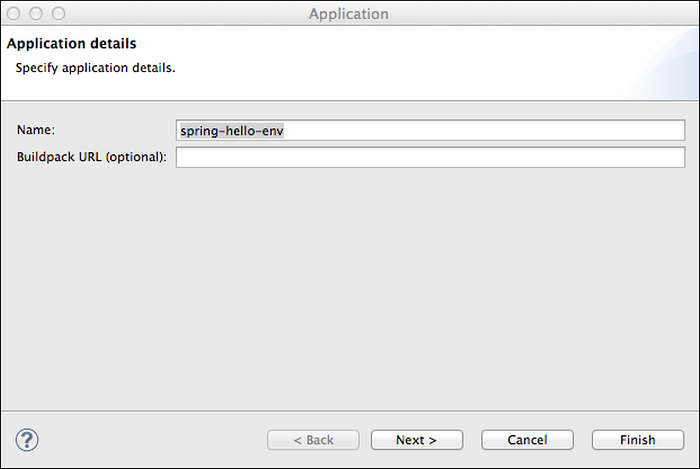
In the Launch Deployment window:
Host — By default, contains the name of the application. You can enter a different value if desired. If you push the same application to multiple spaces in the same organization, you must assign a unique Host to each.
Domain — Contains the default domain. If you have mapped custom domains to the target space, they appear in the pull-down list.
Note: This version of the Cloud Foundry Eclipse plugin does not provide a mechanism for mapping a custom domain to a space. You must use the
cf map domaincommand to do so.Deployed URL — By default, contains the value of the Host and Domain fields, separated by a period (.) character.
Memory Reservation — Select the amount of memory to allocate to the application from the pull-down list.
Start application on deployment — If you do not want the application to be started on deployment, uncheck the box.
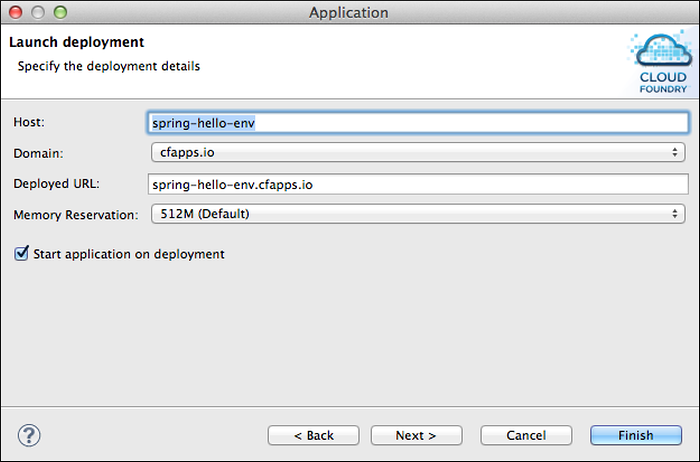
The Services Selection window lists services provisioned in the target space. Checkmark the services, if any, that you want to bind to the application, and click Finish. You can bind services to the application after deployment, as described in Bind and Unbind Services.
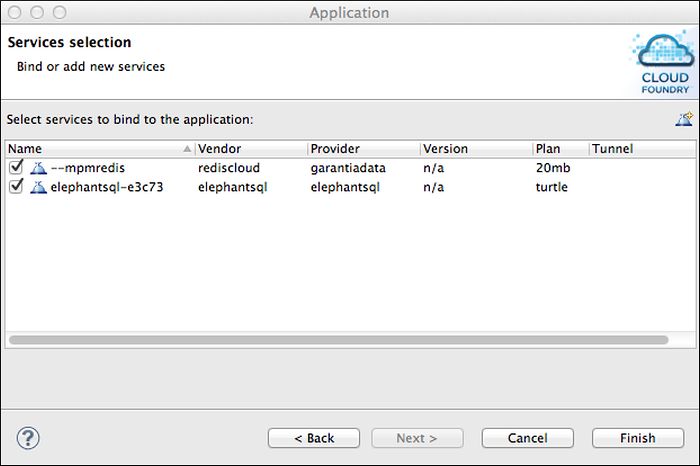
As the deployment proceeds, progress messages appear in the Console view. When deployment is complete, the application is listed in the Applications pane.
Create a Service
Before you can bind a service to an application, you must create it.
To create a service:
- Select the Applications and Services tab.
- Click the icon in the upper right corner of the Services pane.
- In the Service Configuration window, enter a text pattern to Filter for a service. Matches are made against both service name and description.
- Select a service from the Service List. The list automatically updates based on the filter text.
Enter a Name for the service and select a service Plan from the drop-down list.
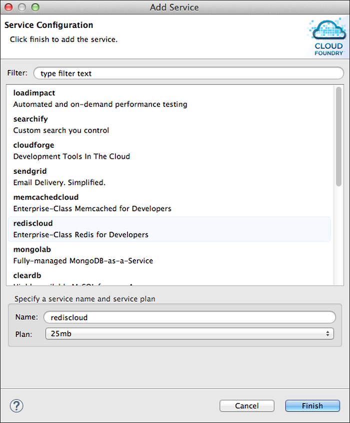
Click Finish. The new service appears in the Services pane.
Bind and Unbind Services
You can bind a service to an application when you deploy it. To bind a service to an application that is already deployed, drag the service from the Services pane to the Application Services pane. (See the area labelled “G” in the screenshot in the Applications and Services above.)
To unbind a service, right-click the service in the Application Services pane, and select Unbind from Application.
View an Application File
You can view the contents of a file in a deployed application by selecting it the Remote Systems View. (See the areas labelled “I” and “J” in the screenshot in the Applications and Services Tab above.)
If the Remote Systems View is not visible:
- Select the Applications and Services tab.
- Select the application of interest from the Applications pane.
- In the Instances pane, click the Remote Systems View link.
In the Remote Systems View, browse to the application and application file of interest, and double-click the file. A new tab appears in the editor area with the contents of the selected file.
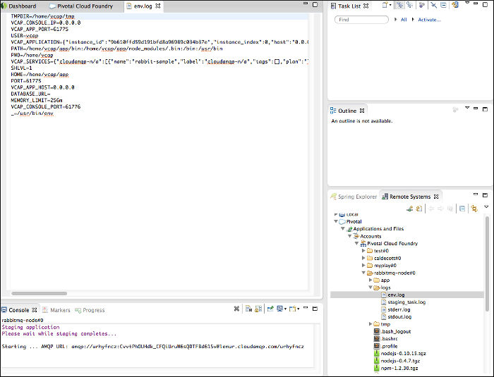
Undeploy an Application
To undeploy an application, right click the application in either the Servers or the Applications pane and click Remove.
Scale an Application
You can change the memory allocation for an application and the number of instances deployed in the General pane when the Applications and Services tab is selected. Use the Memory Limit and Instances selector lists.
Although the scaling can be performed while the application is running, if the scaling has not taken effect, restart the application. If necessary, the application statistics can be manually refreshed by clicking the Refresh button in the top, right corner of the “Applications” pane, labelled “H” in the screenshot in Applications and Services Tab.
Push Application Changes
The Cloud Foundry editor supports these application operations:
Start and Stop — When you Start an application, the plugin pushes all application files to the Cloud Foundry instance before starting the application, regardless of whether there are changes to the files or not.
Restart — When you Restart a deployed application, the plugin does not push any resources to the Cloud Foundry instance.
Update and Restart — When you run this command, the plugin pushes only the changes that were made to the application since last update, not the entire application. This is useful for performing incremental updates to large applications.
Manage Application URLs
You add, edit, and remove URLs mapped to the currently selected application in the General pane when the Applications and Services tab is selected. Click the pencil icon to display the Mapped URIs Configuration window.
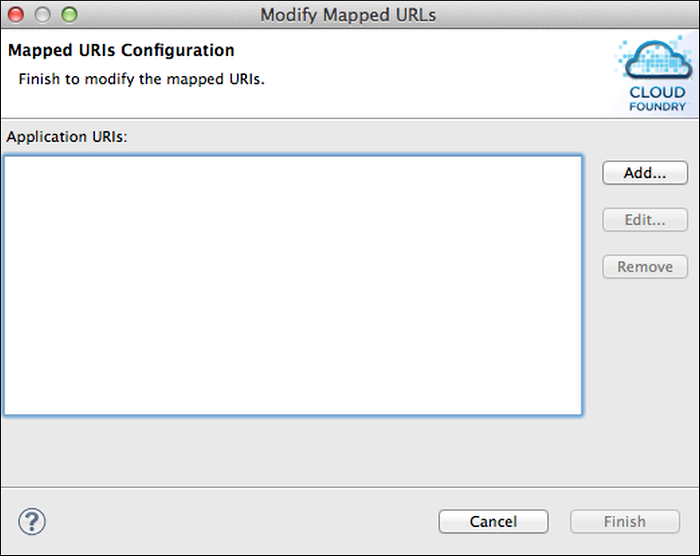
Information in the Console View
When you start, restart, or update and restart an application, application output will generally be streamed to the Console view (labelled “F” in the screenshot in Overview Tab). The information shown in the Console view for a running application instance includes staging information, and the application’s std.out and std.error logs.
If multiple instances of the application are running, only the output of the first instance appears in the Console view. To view the output of another running instance, or to refresh the output that is currently displayed:
In the Applications and Services tab, select the deployed application in the Applications pane.
Click Refresh on the top right corner of the Applications pane.
In the Instances pane, wait for the application instances to be updated.
Once non-zero health is shown for an application instance, right-click on that instance to open the context menu and select Show Console.
Clone a Cloud Foundry Server Instance
Each space in Cloud Foundry to which you want to deploy applications must be represented by a Cloud Foundry server instance in the Servers view. After you have created a Cloud Foundry server instance, as described in Create a Cloud Foundry Server, you can clone it to create another.
Follow the step below to clone a server:
Perform one of the following actions:
- In the Cloud Foundry server instance editor “Overview” tab, click Clone Server.
- Right-click a Cloud Foundry server instance in the Servers view, and select Clone Server from the context menu.
In the Organizations and Spaces window, select the space that you want to target.
The name field will be filled with the name of the space that you selected. If desired, edit the server name before clicking finish Finish.
Add a Cloud Foundry Instance URL
You can configure the plugin to work with any Cloud Foundry instances to which you have access. To do so:
- Perform steps 1 and 2 of Create a Cloud Foundry Server.
In the Cloud Foundry Account window, enter the email account and password that you use to log on to the target instance, then click Manage Cloud URLs
In the Manage Cloud URLs window, click Add.
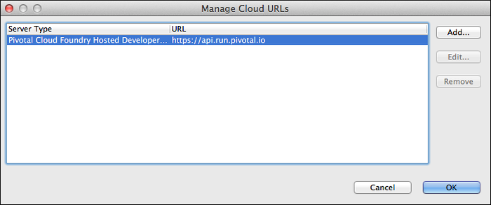
In the Add a Cloud URL window, enter the name and URL of the target cloud instance and click Finish.
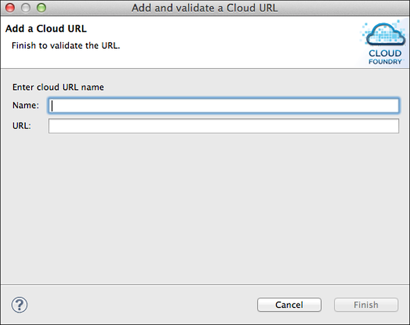
The new cloud instance should appear in the list on the Manage Cloud URLs window. Click OK to proceed.
In the Cloud Foundry Account window, click Validate Account.
The Cloud Foundry Account window is refreshed and displays a message indicating whether or not your credentials were valid. Click Next.
In the Organizations and Spaces window, select the space that you want to target, and click Finish.
Note: If you do not select a space, the server will be configured to connect to the default space, which is the first encountered in a list of your spaces.
Once you have successfully configured the Pivotal Cloud Foundry server, it will appear in the Servers view of the Eclipse or STS user interface. To familiarize yourself with the plugin user interface, see About the Plugin User Interface. Following this step, proceed to Deploy an Application.